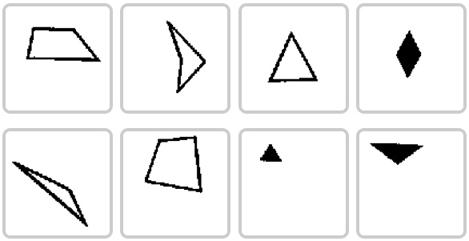
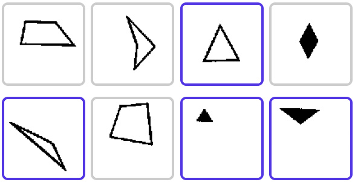

A Bongard problem is a kind of puzzle invented by the computer scientist Mikhail Moiseevich Bongard in the mid-1960s. This Bongard game is come from Bongard Problems.
同步推首发
Download iPhone
Download Android
There is a set of eight diagrams. Four of them have a common factor, rule or pattern, which is lacking in the other Four, because they have a different pattern, or the pattern they have is the negation of the rule.


Having fun while doing it. Some are trivial, but others are extremely complicated. Each individual has more or less difficult to solve the problems, which means nothing in terms of intelligence or any other mental characteristic.
If you have any questions or suggestions, Please feel free to contact us: bongard.us@gmail.com